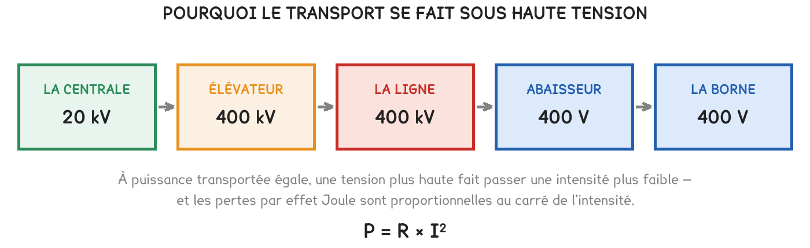

Tle Bac Pro CTRM
Le dépôt installe quatre bornes de 150 kW, raccordées en 20 000 V. Pourquoi si haut, quand les camions chargent en 400 ? Toute la réponse tient dans un carré.
2 exercices · 39 items d'entraînement · 1 simulation · 3 figures
Savoirs travaillés
Le dépôt installe quatre bornes de recharge pour poids lourds, de 150 kW chacune. Le gestionnaire du réseau annonce un raccordement en 20 000 volts, avec un transformateur à installer sur place.
Un collègue s’étonne : « pourquoi 20 000 volts pour des camions qui chargent en 400 ? »
Transporter de l’électricité coûte de l’énergie. Les câbles chauffent, et ce qui chauffe est perdu. Toute la séquence revient à comprendre ce qui fait chauffer un câble — et pourquoi la haute tension le fait moins chauffer.
Entre la centrale et la borne, la tension monte, voyage, puis redescend, parfois en plusieurs fois. Ce qui la fait monter et ce qui la fait descendre porte le même nom : un transformateur.

Élévateur et abaisseur sont le même appareil, branché dans un sens ou dans l’autre. Ce n’est pas l’appareil qui change, c’est le rapport de ses deux bobines.
Série · ELEC
Un câble a une résistance. Le courant qui le traverse le fait chauffer, et cette chaleur est perdue : c’est l’effet Joule.
P = R × I²
L’intensité est au carré. Doubler l’intensité ne double pas les pertes : il les quadruple.
Pour transporter une même puissance, on peut jouer sur la tension : I = P ÷ U. Plus la tension est haute, plus l’intensité est basse — et avec elle, son carré.
Oublier le carré. Diviser l’intensité par 20 ne divise pas les pertes par 20, mais par 400. C’est l’erreur qui fait croire que la haute tension ne rapporte « qu’un peu ».
Série · ELEC
Série · ELEC
Série · ELEC
Deux bobines enroulées sur un même noyau de fer. La tension de chaque côté est proportionnelle à son nombre de spires.
U₂ ÷ U₁ = N₂ ÷ N₁
Il ne fonctionne qu’en courant alternatif : c’est la variation du courant qui fait passer l’énergie d’une bobine à l’autre.
Abaisser la tension n’abaisse pas l’intensité — c’est l’inverse. La puissance se conserve à peu près : si la tension est divisée par 50, l’intensité est multipliée par 50. Côté 400 V, le dépôt appelle cinquante fois plus d’ampères que côté 20 000 V.
Série · ELEC
Série · ELEC
Les quatre bornes de 150 kW fonctionnent en même temps. Le transformateur du dépôt abaisse 20 000 V en 400 V ; son primaire compte 10 000 spires. Le câble entre le transformateur et les bornes présente 0,02 Ω.
Série · ELEC
Exercice · ELEC
Répondre à la question « pourquoi 20 000 volts ? » en deux phrases, avec un chiffre.
| P = R × I² | l’intensité au carré : ÷ 20 sur I, ÷ 400 sur les pertes |
| Haute tension = faible intensité | c’est pour ça qu’on transporte à 400 000 V |
| U₂ ÷ U₁ = N₂ ÷ N₁ | en alternatif seulement ; élévateur et abaisseur, même appareil |
Ce qu’il faut retenir de la séquence, à manipuler : quelques étapes, un geste à chacune, et un défi pour finir.
La simulation de la ligne : l’atelier au bout du terrain, relié à la maison par un long câble. On y mesure à la pince et au voltmètre ce qui n’arrive pas à l’atelier, puis on pose un transformateur à chaque bout.
Un sujet entier, bâti comme l’épreuve de sciences : quatre parties cotées séparément, deux appels au professeur. Le format complet est détaillé sur la fiche de la séquence 2.
| APP | ANA | REA | VAL | COM |
|---|---|---|---|---|
| s’approprier | analyser | réaliser | valider | communiquer, aux appels |
À l’atelier de maintenance, la baladeuse d’inspection des fosses fonctionne en 24 V, pour la sécurité. Elle est alimentée par un transformateur branché sur le 230 V, dont le primaire compte 1 150 spires. La lampe fait 60 W ; son câble de 10 m présente une résistance de 0,4 Ω.
Problématique : « Combien de spires au secondaire, et que coûte en pertes le choix du 24 V plutôt que du 230 V ? »
Partie 1 · APP — Relever les deux tensions et le nombre de spires donné. Dire pourquoi une baladeuse de fosse travaille en très basse tension.
Partie 2 · ANA — Proposer un protocole qui permette de vérifier, au TP, le rapport des tensions d’un transformateur.
APPEL 1 — présenter le protocole au professeur avant de brancher.
Partie 3 · REA — Calculer le nombre de spires du secondaire, puis l’intensité dans le câble et les pertes, sous 24 V puis sous 230 V.
APPEL 2 — réaliser la mesure des deux tensions devant le professeur.
Partie 4 · VAL — Comparer les deux pertes et répondre à la problématique.
Série · ELEC
Exercice · ELEC
Répondre à la problématique en deux phrases : le nombre de spires, et ce que coûte le choix du 24 V, en le justifiant.
Cette page rappelle la séquence. Elle ne remplace pas les documents distribués et ne donne aucun corrigé.